mitchell-917 · interactive lab
Every page here reads the same JSON snapshot that renders my profile README. No frameworks, no third-party widgets: vanilla Canvas, CSS and JavaScript.

The last year of commits as a rotating isometric city. Drag to orbit, scroll to zoom, hover for the day.
Open →A typed-out terminal session streaming real streaks, weekday patterns and language splits.
Open →Six-axis radar with live sliders, four palettes, shareable links and PNG export.
Open →Featured repositories in a 3D carousel with live stars, languages and demo links.
Open →Compose a profile banner from live stats, pick a palette and export at three sizes.
Open →